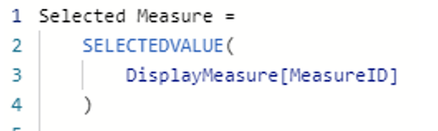
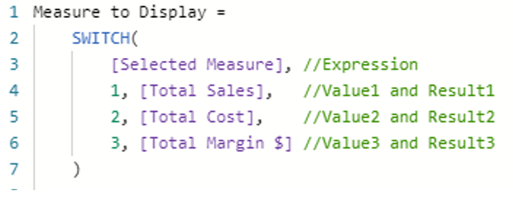
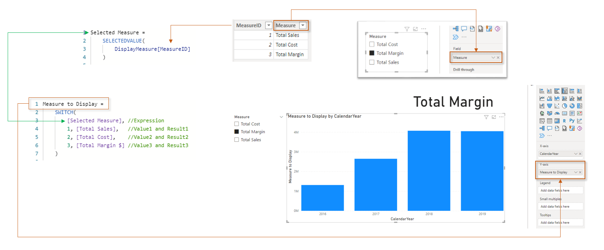

SWITCH Function in Power BI
Power BI Example for Switch Function
Create a Calculated Measure to get the selected value
Create the SWITCH method

Output
Based on the measure selected, the output of the calculated measure is displayed as a bar chart.
The entire flow is shown below
.